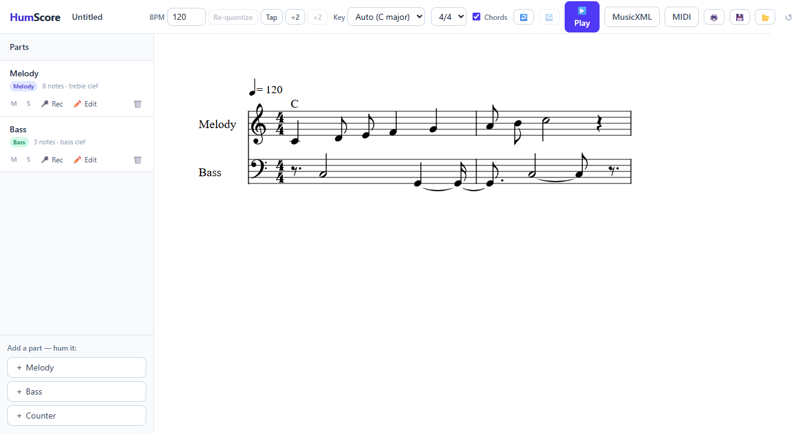
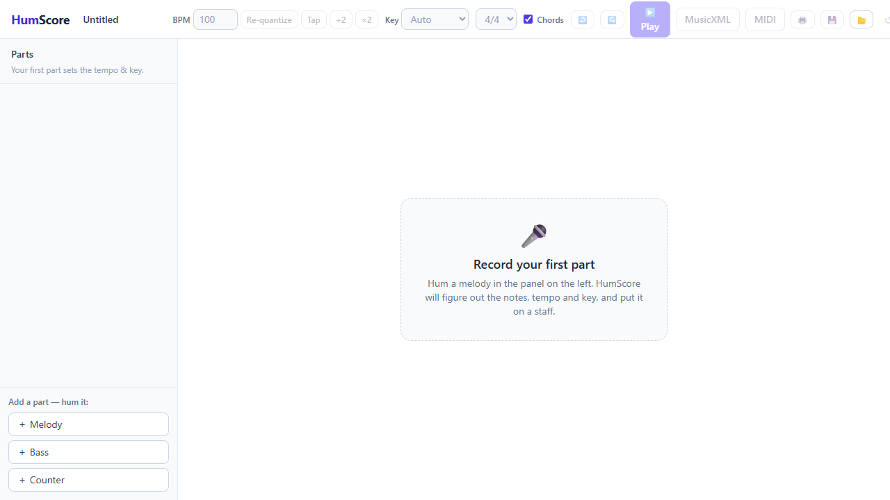
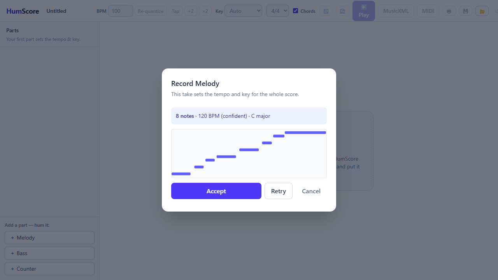
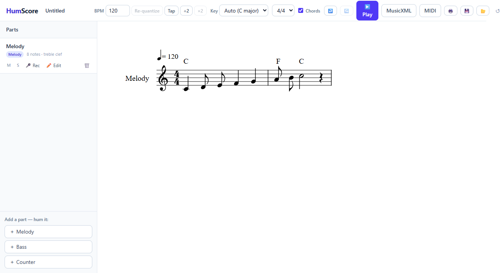
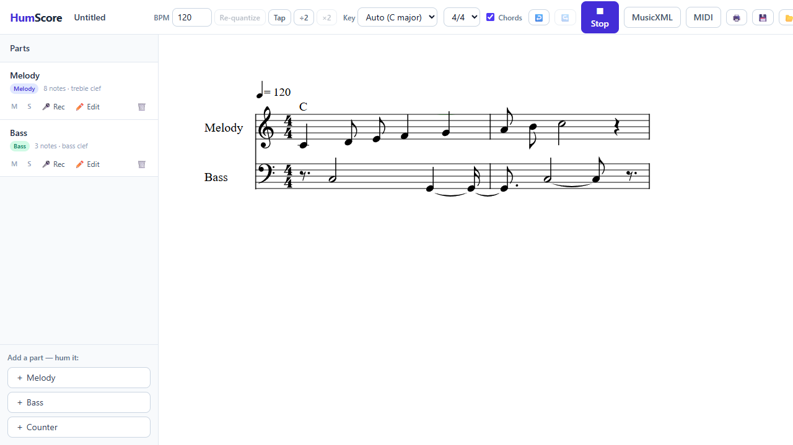
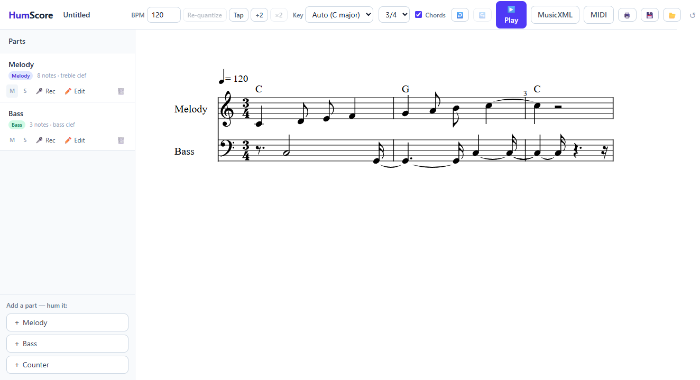

Hum the parts of a song one at a time — melody, bass, a countermelody — and HumScore turns them into real, editable, playable sheet music with chord symbols, exported as MusicXML and MIDI. Everything happens in your browser.

One voice at a time — each hum is monophonic. Melody first, then bass, then a countermelody.
Pitch detection (McLeod pitch method) turns the audio into notes; tempo and key are inferred automatically.
Rhythm snaps onto a sixteenth grid. Your first part establishes the grid for the whole score.
Later parts get a click count-in and the existing parts as a backing track (headphones recommended).
Rule-based harmonization (Viterbi over diatonic triads) adds chords; export MusicXML and MIDI.
Pitch nudge, duration changes, deletion, and click-to-audition on any note — plus a piano-roll preview of every take before you accept it.
Engraved notation (OpenSheetMusicDisplay) plays back in the browser via Tone.js — a synth per part plus a chord poly synth — with a moving cursor and per-part mute/solo.
Tap tempo, ÷2/×2 tempo-octave fixes, and lossless re-quantize: raw recordings are retained, so changing the BPM never degrades your takes.
4/4, 3/4, and 2/4 — switch any time and the score re-bars.
Ctrl+Z / Ctrl+Y across every action, Space to play/stop, and autosave to localStorage so a refresh never loses your score.
If tempo detection is unsure (rubato humming is genuinely hard), an amber dot appears next to the BPM — set it manually and hit Re-quantize.
Captured by the repo's own end-to-end smoke test, which drives the real app with a synthesized hum.





It's a static Vite app — Node.js 18+ is the only prerequisite. A mic helps, but the smoke test can hum for you.
git clone https://github.com/ItsRecharge/HumScore
cd HumScore
npm install
npm run dev # http://localhost:5173Click + Melody, allow microphone access, and hum after the 3-2-1 countdown. Review the piano-roll preview, then Accept. That take sets the tempo and key for the whole score.
Put on headphones, then add Bass or Counter parts — you'll hear a click count-in plus your existing parts as a backing track so everything lands on the same grid.
Space toggles playback. Click notes to audition or edit them. Export with the MusicXML or MIDI buttons — both open in MuseScore, Finale, Sibelius, or any DAW.
npm run test # vitest: theory, serializer, audio-pipeline tests
npm run build # typecheck + production buildA smoke test drives the real app in headless Edge with a stubbed microphone that "hums" a synthesized melody — record → transcribe → render → play → export. Screenshots land in scripts/smoke-out/.
npm run dev &
node scripts/smoke.e2e.mjsAudio → notes (signal processing) and notes → score (symbolic music theory) are separate modules. Only RawNote[] in the seconds domain crosses the boundary, via audio/detectNotes.ts. Everything symbolic is tick-based — 16 ticks per 4/4 measure — and pure, which is what makes it unit-testable.
src/
audio/ mic capture (AudioWorklet),
pitch tracking (pitchy),
note segmentation
theory/ tempo inference, quantization,
key inference (Krumhansl–Kessler),
harmonization (Viterbi over
diatonic triads)
score/ score model, MusicXML serializer
playback/ Tone.js (synth per part +
chord poly synth)
export/ MusicXML / MIDI downloads
state/ React reducer store
components/ Toolbar, PartsPanel, ScoreView
(OpenSheetMusicDisplay),
RecordModal, PartEditorVite + React 18 + TypeScript + Tailwind, pitchy (pitch detection), OpenSheetMusicDisplay (engraving), Tone.js + @tonejs/midi (playback and MIDI export).
| Stage | Method |
|---|---|
| Pitch tracking | McLeod pitch method on mic audio from an AudioWorklet |
| Note segmentation | Contiguous pitched regions become RawNote[] (seconds) |
| Tempo inference | Estimated from onset spacing; flagged amber when uncertain |
| Quantization | Onsets/durations snapped to a sixteenth grid (ticks) |
| Key inference | Krumhansl–Kessler profile correlation |
| Harmonization | Viterbi decoding over diatonic triads — deterministic, no LLM |
| Engraving | Score model → MusicXML → OpenSheetMusicDisplay render |
MusicXML carries parts, chords, and time signatures into notation software. MIDI carries notes and tempo into DAWs. Autosave keeps the working score in localStorage between sessions.
No, no, and no. HumScore is fully client-side: no server, no API keys, no ML model downloads. Your voice never leaves the browser, and the score persists locally via autosave.
Monophonic pitch tracking is reliable; polyphonic transcription is a research problem. Each part is one voice, and the multi-part texture comes from overdubbing — the same way musicians layer takes in a studio.
When you record a second part, the existing parts play as a backing track. Without headphones the mic hears that playback mixed with your voice, which pollutes pitch detection. Headphones keep the mic input clean.
An honesty indicator: tempo inference was uncertain (free-form or rubato humming makes beat detection genuinely hard). Set the BPM manually — or use tap tempo — and hit Re-quantize. Raw recordings are retained, so this is lossless.
No LLM anywhere. Harmonization is classic rule-based decoding: a Viterbi pass over the diatonic triads of the inferred key, scoring how well each chord explains the notes in each measure with sensible transitions between them. Deterministic and instant.
4/4, 3/4, and 2/4 time. Key is inferred automatically (Krumhansl–Kessler) across major keys and can be overridden from the toolbar's key selector at any time.
Yes — export MusicXML for notation software (MuseScore, Finale, Sibelius, Dorico) and MIDI for DAWs. Both exports carry all parts.
Tempo-octave ambiguity is inherent to beat inference. Use the ÷2 / ×2 buttons next to the BPM, or tap the real tempo with Tap, then Re-quantize. Nothing is lost — quantization reruns from the raw recording.
Hum louder and closer to the mic, in a quiet room, using a sustained "doo" or "la" rather than whistling or breathy humming. Check the browser actually granted mic access to localhost, and that the right input device is selected at the OS level.
Record with headphones and start exactly on the count-in — the backing track is the grid. If the first part's tempo was wrong to begin with, fix its BPM first; every later part inherits that grid.
Key inference works from the notes it heard — a short or chromatic hum can mislead it. Pick the key explicitly in the toolbar's Key selector; the notation respells to match. Individual wrong notes can be nudged in the Part Editor.
Browsers require a user gesture before audio starts — click Play rather than relying on a keyboard shortcut the first time. Also check per-part Mute/Solo states in the parts panel; a stray solo silences everything else.
Autosave restores the last score from localStorage by design. Use the reset/new-score control in the toolbar — or clear the site's localStorage in devtools — to start fresh.
scripts/smoke.e2e.mjs launches Edge via playwright-core's msedge channel — it needs Microsoft Edge installed (present on Windows by default). Make sure npm run dev is serving on 5173 first, or pass a URL: node scripts/smoke.e2e.mjs http://localhost:4173.